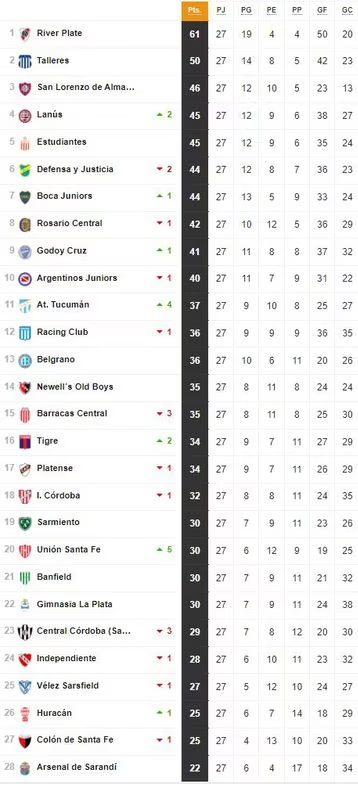
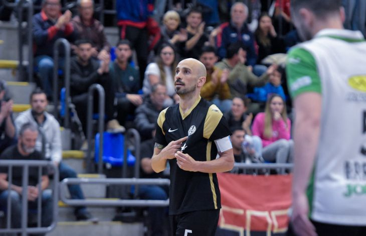
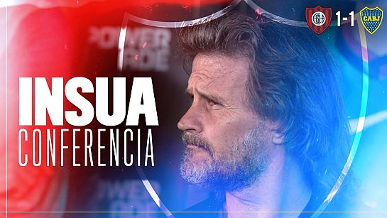
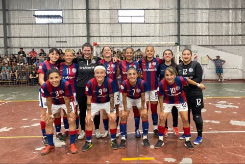
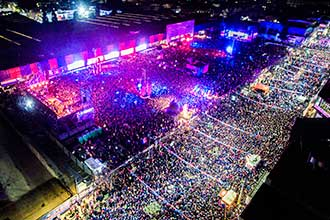

San Lorenzo venció 3-1 a Pinocho, en Boedo, por la primera semifinal del Torneo de AFA.

La palabra de Rubén Insúa tras el partido ante Boca

¡Vos ya podés asegurarte un lugar en ese escenario tan singular! Sacá tu Abono 2023-2024 y disfrutá las noches del básquet, del futsal, del vóley y de tantas disciplinas que multiplican la gloria del Ciclón

Las vigente campeonas vencieron 5-4 a All Boys, por el segundo partido de la semifinal del Torneo de AFA, y se metieron en la final.

San Lorenzo dio otro gran paso hacia el sueño del nuevo estadio en Avenida La Plata